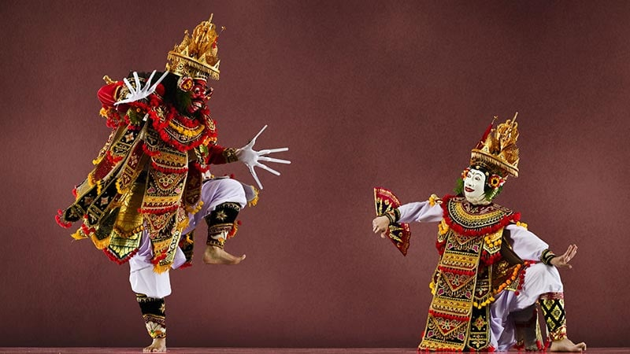

Tari Telek
Tari Telek adalah salah satu dari ragam tarian Bali yang menggunakan properti topeng selain Dramatari Topeng, Barong dan Rangda, Brutuk, serta Wayang Wong.
Hingga saat ini Tari Topeng Telek tetap dipentaskan secara teratur oleh banjar-banjar di Bumi Serombotan, Klungkung, seperti Banjar Adat Pancoran Gelgel dan Desa Adat Jumpai.
Dikatakan bahwa Topeng Telek adalah tarian sakral (Tari Wali) warisan leluhur yang pantang tidak dipentaskan. Sangat diyakini pementasan tari ini adalah sarana untuk “meminang” keselamatan dunia, khususnya bagi banjar atau desa adat masyarakat pendukungnya.
Diyakini juga oleh mereka apabila tidak mementaskan Telek sama halnya dengan mengundang beragam jenis marabahaya. Keyakinan tersebutlah yang turut menjadikan Tari Telek tetap lestari hingga saat ini.
Bahkan demi menjaga tetamian (warisan) leluhur ini, seluruh pakem pada pementasan Tari Telek tetap dipertahankan sebagaimana adanya.
Adapun mengenai waktu pementasan, masing-masing banjar memiliki aturan tersendiri. Ada yang dua kali dalam setahun, ada juga yang dilakukan rutin lima belas hari sekali.
<< Kembali